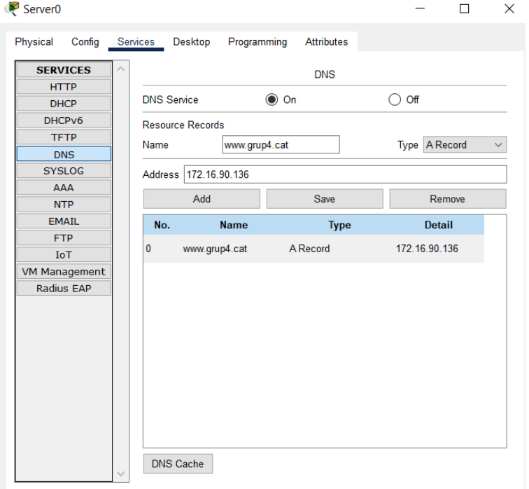

DNS se corresponde con las siglas de Domain Name System (que se traduce por Sistema de Nombres de Demonio) y es el sistema que hace posible que podamos navegar por Internet, puesto que apunta los dominios al servidor correspondiente y, además, sirve de intérprete entre nosotros y la máquina al traducir la dirección IP (un secuencia numérica) a un nombre de dominio (el nombre de una web).
A continuación os explicaremos cómo hemos desarrollado este reto, en el cual, hemos utilizado una máquina virtual de Ubuntu Server. Nos pedía hacer la instalación y configuración del servidor DNS y una vez hecho esto aplicarlo al Packet Tracer que hicimos en la Fase anterior.
En la configuración, hemos tenido que configurar el DNS para que podamos utilizar la web a través de un dominio, también le hemos dado los accesos más habituales y para que se puedan servir estos accesos hemos tenido que hacer que nuestro servidor pueda acceder al DNS resolver. Por último, hemos hecho que se pueda resolver el dominio que hemos creado en el siguiente reto.
Sin contar el apartado del Packet Tracer, todo esto se ha hecho a través de la terminal de Ubuntu Server.
1. Instalación de un servidor DNS.
Para empezar este reto, hemos hecho la instalación del servidor DNS, la cual hemos hecho descargando el paquete bind9, que para ello hemos configurado primero el proxy. Todo esto lo hemos hecho de la siguiente manera:
Primero de todo, para poder instalar el paquete bind9 necesitamos configurar la red y el proxy, para ello vamos a modificar los siguientes archivos:
- /etc/netplan/00-netcfg.yaml
- /etc/bash.bashrc
- /etc/environment
- /etc/apt/apt.conf
1. Para modificar el primer archivo, lo vamos a hacer poniendo el siguiente texto en la imagen.
2. Una vez hecho esto, vamos a aplicarlo con el código seleccionado en la imagen.
3. Ahora, vamos a actualizar el sistema con los siguientes comandos y después reiniciar la máquina.
Para reiniciar la maquina, lo hacemos poniendo el comando: reboot
4. Ahora, vamos al final del archivo y escribimos el siguiente texto marcado en la imagen.
5. En este archivo, vamos a hacer lo mismo que en el anterior, pondremos el texto marcado en la imagen, debajo del texto existente.
6. En este archivo es diferente, ya que está vacío, por eso vamos a poner únicamente lo marcado en la imagen.
7. Una vez hemos configurado la red y el proxy, vamos a instalar el paquete bind9 con el siguiente comando: apt-get install bind9.
8. Ahora vamos a instalar el paquete auxiliar bind9-utils, con el siguiente comando marcado en la imagen.
2. Configuración del Servidor DNS.
Una vez hecha la instalación de los paquetes necesarios, procedemos a configurar el DNS con las características dichas en la introducción del servidor DNS.
1. Para empezar, el primer archivo que modificaremos para configurar correctamente el servidor DNS es el archivo /etc/bind/named.conf.options donde hemos indicado los siguientes datos:
- IP del servidor.
- Máscara de subred.
- IPs del DNS al que nos dirigimos cuando encontramos uno en nuestro servidor local.
Para ello lo ponemos como se puede ver en la imagen.
2. Después de modificar el archivo anterior, proseguimos a editar el archivo /etc/default/named, donde nos obligaremos a usar el protocolo IPv4. Modificaremos la línea de código, tal y como está en la imagen.
3. Ahora para comprobar que funciona vamos a utilizar el comando named-checkconf, si está bien nos saldrá lo mismo que en la imagen sinó, tendremos que mirar qué hemos puesto mal.
4. En segundo lugar, pondremos el comando service bind9 restart para reiniciar y luego para saber si esta bien pondremos service bind9 status como en las siguientes imágenes.
5. Ahora vamos a crear las zonas de búsqueda directa e inversa, para ello modificaremos el archivo /etc/bind/named.conf.local como se indica en la imagen.
6. Una vez hecho esto, creamos un directorio en la ruta /etc/bind llamado “zones” con el comando mkdir zones, donde guardaremos los archivos de configuración de las zonas de búsqueda.
7. Una vez creado el directorio, en este crearemos un archivo llamado db.grup4.cat con el comando touch db.grup4.cat, donde guardaremos la configuración de la zona de búsqueda directa. En el cual escribiremos lo que aparece en la imagen.
8. También configuraremos la zona inversa, para ello crearemos un archivo llamado db.172.16 en el directorio. Lo haremos de la siguiente manera tal y como se ve en la imagen.
9. Como las modificaciones que hemos realizado son un poco complejas, pondremos los comandos que aparecen en la imagen, para comprobar que lo hemos hecho bien.
10. Ahora reiniciamos el servidor DNS con el comando que vemos en la imagen.
11. Para saber si esta bien conectado, tenemos que poner los siguientes comandos, en los cuales haremos diferentes ping:
- ping 172.16.90.131
- ping www.grup4.cat
3. Aplicar DNS en Packet Tracer.
1. Para aplicar el dns en packet tracer nos iremos al servidor, clicamos a “services” i en HTTP agregaremos los archivos de la página web.
2. Una vez agregados los archivos nos iremos donde dice DNS y añadiremos el dns.

3. Para acabar iremos a AAA y agregaremos el nombre de dominio de la página web y la dirección ip de el nombre de dominio
4. Para comprobar si esta bien iremos al servidor, seleccionamos “Web Browser” y pondremos el nombre de dominio, Este es el resultado: